Dentro de esta sección se discutirán las diferentes estadísticas que los agentes poseen, mecánicas que está afectan, armamento E.G.O. y los combates que no se pueden evitar, las Ordalías.
Estadísticas basicas de los agentes
Los agentes poseen 4 estadísticas base:
La
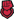
Fortaleza: Representa cuánta vida máxima posee el agente.La
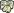
Prudencia: representa cuánta sanidad mental máxima posee el agente.La Templanza: Está se encuentra dividida en 2:
La “posibilidad de éxito”, que representa las posibilidades añadidas de que un resultado al trabajar con una anormalidad de positivo.
El “tiempo de trabajo”, está estadística reducirá el tiempo que un agente se tomará al trabajar con un anormalidad.
Estás estadísticas pueden cambiar independientemente de la otra.
La
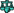
Justicia: Esta estadística se encuentra dividida en 2:La velocidad de movimiento: representa que tan rápido un agente de llegará de un punto A a un punto B.
La velocidad de ataque: Reduce el tiempo de inacción entre ataques, resultando en una mayor cantidad de daño por segundo.
Estás estadísticas pueden cambiar independientemente de la otra.

Cada una de estas estadísticas bases principales pueden subir a través de trabajar con anormalidades, hasta un máximo de 100 ( excluyendo las recompensas de Hokma ), al cruzar cierto umbral numérico cada estadística subirá de nivel y el valor de numérico individual de cada nivel por estadística se sumará, si el valor resultante de está suma cruza cierto umbral el nivel de agente subirá, demostrado en el siguiente gráfico:
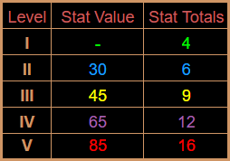
Los números de la izquierda representan los umbrales numéricos que para subir de nivel una estadística y los números de la derecha los umbrales numéricos de la suma total de los niveles para subir el nivel de un agente.
Estás estadísticas pueden ser incrementadas de 2 maneras:
Por un lado al trabajar con anormalidades el valor base de una estadística incrementará según el trabajó realizado:
-
Trabajar
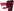
Instinto incrementará Fortaleza -
Trabajar
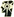
perspicacia incrementará Prudencia -
Trabajar
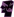
Apego incrementará Templanza -
Trabajar
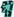
Represion incrementará Justicia
La cantidad incrementada se verá afectada por el riesgo de la anormalidad en la que se practica el trabajó, cuan más alto el riesgo mayor será el incremento estadístico. El aumento de estadística se aplicará una vez se pase al siguiente día.
Por otro lado, las estadísticas de un empleado pueden incrementar o disminuir a través de efectos temporales o semipermanentes, como un aumento a una estadística otorgado por un periodo de tiempo luego de interactuar con una anormalidad o efectos de un regalo E.G.O. . Estos aumentos a estadística no permanentes contarán hacia el cálculo hecho para determinar el nivel de una estadística en un empleado, por tanto es posible incrementar el nivel de una estadística en un mismo día utilizando estos efectos, un ejemplo de esto sería (T-09-90).
Estados de panico
Otra mecánica afectada por las estadísticas son los estados de pánico. Existen 4 estados de pánico, cada uno asociado a una estadística, al momento en el que un agente entre en pánico se tomará la estadística más alta que este posee para decidir qué estado tomará, los estados y estadística asociada son los siguientes:
La variante {X} representará el nivel del empleado.
-
Asesino: Si la estadística más alta del agente es Fortaleza este obtendrá un bono plano a su “velocidad de ataque” equivalente a la siguiente fórmula, ( {X} * {X} ) y procederá a perseguir y atacar a la entidad más cercana, esto incluye a empleados.
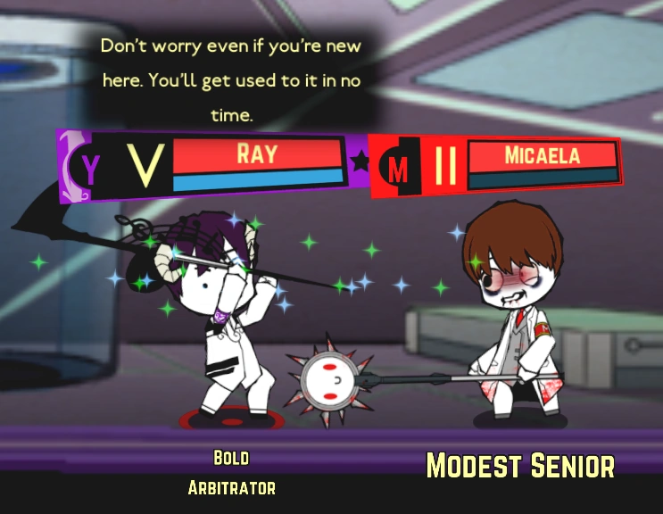
-
Suicidio: Si la estadística más alta del agente es Prudencia este comenzará a temblar y permanecerá en eso luegar por tiempo en 30 y 60 según, una ves este temporizador acabé el agente se suicidará. Todos los empleados presentes en la habitación dónde el suicidio ocurra tomarán daño blanco equivalente a 20 veces el nivel del empleado que haya cometido suicidio.
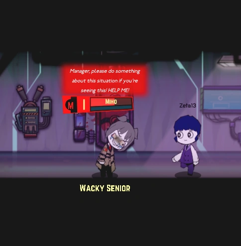
-
Deambulante: Si la estadística más alta del agente es Templanza es obtendrá un bono plano a su “velocidad de movimiento” equivalente a la siguiente fórmula ( {X} * {X} ) y procederá a deambular por la instalación, realizando daño blanco por segundo equivalente a el nivel del agente en pánico a los empleados se encuentren en la misma habitación que esté.
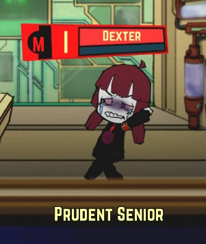
-
Sabotaje: Si la estadística más alta del agente es Justicia este recibirá un bono plano a su “velocidad de movimiento” equivalente a la siguiente fórmula ( {X} * {X} ) y un multiplicador a sus resistencias equivalente a la siguiente fórmula ( [ 1 - 0,{X} ]{X} ). El agente procederá a seleccionar una unidad de contención aleatoria en la instalación y correrá hasta llegar a ella, una vez en la puerta comenzará a golpearla con una palanca, cada golpe posee una chance de bajar el contador Qliphoth de la unidad de contención en 1, la probabilidad de que esto ocurra es equivalente a la siguiente fórmula por golpe ( 15 * {X} ) %. Luego de bajar el contador a cero o golpear la puerta 5 veces seleccionará otra unidad de contención para repetir el proceso.
Resistencias al daño
La interacciones entre las fuentes de daño y las resistencias se expresan con multiplicadores, como ejemplo tenemos el traje base con el que todo agente comienza al ser contratado, sus estadística son la siguientes:
- Rojo 1.0
- Blanco 1.0
- Negro 1.5
- Palido 2.0
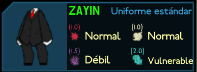
Los números asignados a cada daño son multiplicadores, es decir como al daño rojo y blanco se lo multiplica por 1 el agente recibirá del daño el daño que la fuente del daño haya realizado.
Por otro lado posee una resistencia al daño negro del 1.5 y al pálido del pálido del 2.0
Estás reglas no solo afectan a los trajes de los agentes sino además a las anormalidades, cada entidad poseerá algún tipo de resistencia o vulnerabilidad a algún tipo daño, esto es clave a la hora de suprimir entidades.
Además conforme más las se acerque a un valor las resistencias tomarán un nombre acorde al multiplicador, los rangos son los siguientes:
Daños decimales
Otra mecánica relacionada a las resistencias son las probabilidades de daños decimales, en caso de que el daño resultante luego de ser aplicada un resistencia sea un número con decimales lo que se hará será tomar parte entera del número por un lado y tomar la parte decimal, multiplicarla por 100 y utilizar el número resultante como una posibilidad de sumar 1 al daño infligido.
Como ejemplo, en caso de que se inflija 5 de daño rojo al un agente con una resistencia de 0.5 a este, el daño final infligido al agente será de 2 con un 50% de probabilidades de que sea 3.
E.G.O.
El E.G.O. es el armamento con el que el jugador equipara a sus empleados, producido a través del trabajo con anormalidades existen 3 tipos, las armas E.G.O. , los trajes E.G.O. y los regalos E.G.O. .
Las armas y trajes E.G.O. se obtienen de la misma manera, salvó muy pocas excepciones todos los trajes y armas se producen mediante anormalidades utilizando las cajas PE únicas para costear dicho E.G.O. .
Cómo prácticamente todo lo que puede catalogado en este juego el E.G.O. También es catalogado por las medidas de nivelación de riesgo Zayin, Teth, HE, WAW y Aleph para medir la calidad de este, cuánto mayor el nivel de riesgo mejor calidad. El riesgo de una anormalidad usualmente se transmitirá a su E.G.O. , pero existen raras excepciones dónde una anormalidad producirá E.G.O. de un nivel superior al propio, como ( F-01-69 ) produciendo E.G.O. WAW, o ( O-01-64 ) produciendo E.G.O. Aleph.
Las armas E.G.O. poseen varias posibles características que las diferencian entre sí:
Por el otro se encuentran los trajes E.G.O. que normalmente sólo proporcionan resistencias y/o vulnerabilidades a los 4 tipos de daño.
Por otro lado estan los Regalos E.G.O., esto son obtorgados por la anormalidades al trabajar en ellas, cada anormalidad posee un Regalo E.G.O. unico y una provabilidad propia de otorgarlo
Cada Regalo E.G.O. ocupara una categoria dentro del inventario de Regalos E.G.O. del agente, estas "categorias" solo pueden almacenar 1 tipo de Regalo E.G.O. , es decir, si un agente posee un Regalo E.G.O. en la categoria "cabeza" y recibe otro Regalo E.G.O. para la misma casilla, reemplazará el regalo anterior en favot del nuevo
lista de categorias
Los Regalos E.G.O. pueden ser visualizados clicando en el boton a la izquiera de Fortaleza y Templanza con un triangulo apuntando hacia la izquiera
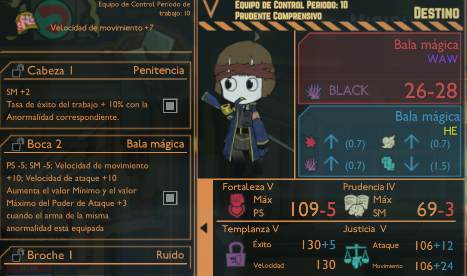
Los regalos E.G.O. tienen la capacida de reducir estadisticas en favor de otras, en caso de que esto perjudique el role de empleado que lo posea lo indicado seria buscar otro regalo que ocupe la misma categoria para reemplzarlo